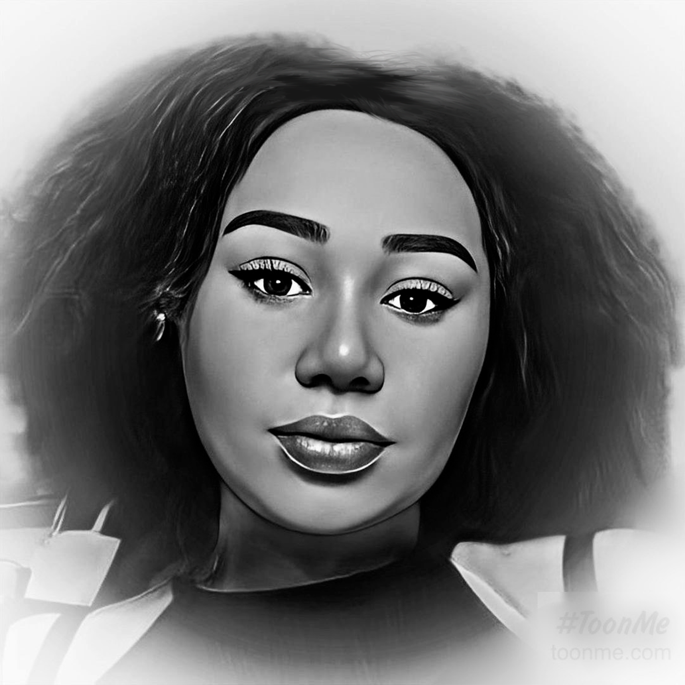

Holà ! Je m'appelle Alexane ,
Depuis que j'ai l'âge de 11 ans, j'ai toujours rêvé
de faire un métier qui allie la création et le digital.
En 2019 en faisant des recherches pour une futur reconversion
professionelle, j'ai fait la connaissance du métier
d'Animatrice 3D . J'ai trouver le métier
de mes rêves! J'ai réfléchi pendant 3 ans et enfin
cette année, j'ai décidé de tout arrêter pour pouvoir reprendre
mes études. Je suis fière de pouvoir dire qu'actuellement je suis
en 1ère année de bachelor à l'IIM et l'année prochaine
j'aimerais aller dans l'axe Animation 3D .